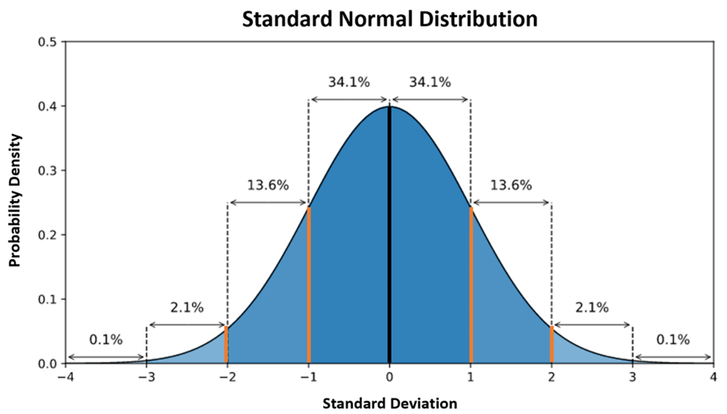
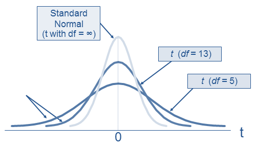

8 Sebaran Peubah Acak
Dalam statistik, peubah acak adalah variabel yang nilainya dihasilkan oleh proses acak. Misalnya, ketika melempar sebuah dadu, hasil yang muncul (angka 1 hingga 6) merupakan contoh dari peubah acak diskrit, karena hasilnya berupa bilangan bulat yang tetap. Sebaliknya, tinggi badan seseorang bisa dianggap sebagai peubah acak kontinu, karena bisa memiliki nilai dalam rentang tertentu, bukan hanya angka bulat.
Secara formal, peubah acak dibagi menjadi dua jenis: peubah acak diskrit dan peubah acak kontinu. Peubah acak diskrit memiliki sejumlah kemungkinan hasil yang terbatas dan bisa dihitung, seperti jumlah kendaraan yang lewat di suatu jalan pada hari tertentu. Sedangkan peubah acak kontinu memiliki rentang nilai yang tak terhingga, seperti berat badan atau suhu udara.
8.1 Sebaran Peluang
Setiap peubah acak memiliki pola sebaran atau sebaran peluang, yang menunjukkan bagaimana peluang disebarankan di antara nilai-nilai yang mungkin. Untuk peubah acak diskrit, sebaran peluang bisa dijelaskan dengan Fungsi Massa Peluang (FMP). Sedangkan untuk peubah acak kontinu, kita menggunakan Fungsi Kepekatan Peluang (FKP) atau Probability Density Function (PDF).
Sebagai contoh, untuk peubah acak diskrit seperti hasil lemparan koin, FMP memberikan peluang untuk masing-masing hasil (misalnya, peluang munculnya angka atau gambar). Sedangkan untuk peubah acak kontinu seperti tinggi badan, FKP memberikan kepadatan peluang untuk berbagai interval nilai, dan peluang untuk suatu rentang dihitung dengan mengintegrasikan FKP di sepanjang rentang tersebut.
8.2 Contoh Sebaran Peubah Acak
Beberapa contoh sebaran yang sering digunakan dalam dunia data analysis meliputi:
Sebaran Binomial: Sebaran ini digunakan untuk memodelkan jumlah keberhasilan dalam serangkaian percobaan yang independen. Misalnya, jika kita ingin menghitung peluang munculnya kepala dalam 10 lemparan koin, kita bisa menggunakan sebaran binomial.
Sebaran Normal: Sebaran ini adalah salah satu yang paling umum digunakan dalam analisis data. sebaran normal digunakan untuk memodelkan banyak fenomena alam seperti tinggi badan, berat badan, dan IQ. Ciri khas dari sebaran ini adalah bentuknya yang simetris dengan mean, median, dan modus yang sama.
Sebaran t-Student: Sebaran ini adalah salah satu yang paling umum digunakan dalam analisis data. sebaran normal digunakan untuk memodelkan banyak fenomena alam seperti tinggi badan, berat badan, dan IQ. Ciri khas dari sebaran ini adalah bentuknya yang simetris dengan mean, median, dan modus yang sama.
Sebaran Poisson (dibaca [pwasɔ̃]: poassong): Sebaran ini digunakan untuk memodelkan jumlah kejadian dalam interval waktu atau ruang tertentu, misalnya, jumlah pelanggan yang datang ke sebuah restoran dalam satu jam.
Pemahaman yang mendalam mengenai sebaran peubah acak sangat penting bagi seorang data analyst. Sebagai seorang data analyst, Anda akan sering berhadapan dengan data yang berasal dari berbagai jenis sebaran peluang. Memahami karakteristik setiap sebaran akan membantu Anda dalam membuat inferensi yang lebih akurat, memodelkan ketidakpastian, dan pada akhirnya, menghasilkan analisis data yang lebih valid.
Dengan pengetahuan ini, seorang data analyst bisa lebih percaya diri dalam menavigasi proses pengambilan keputusan berbasis data, karena mereka memahami pola sebaran yang mendasari data yang mereka analisis.
8.3 Sebaran Binomial
Sebaran Binomial adalah salah satu sebaran peluang yang paling umum digunakan dalam statistik, khususnya dalam memodelkan situasi di mana hasil percobaan bisa dibagi menjadi dua kemungkinan hasil: sukses dan gagal. Sebaran ini sangat berguna dalam berbagai situasi di dunia nyata, seperti menghitung peluang keberhasilan dalam serangkaian percobaan independen dengan hasil biner (dua hasil).
8.3.1 Karakteristik Sebaran Binomial
Beberapa karakteristik utama dari sebaran binomial adalah:
Percobaan Berulang: Sebaran ini mengasumsikan ada serangkaian \(n\) percobaan yang identik, dan setiap percobaan hanya memiliki dua hasil yang mungkin.
Independensi: Hasil dari setiap percobaan tidak mempengaruhi hasil percobaan lainnya. Artinya, setiap percobaan berdiri sendiri dan tidak ada ketergantungan antar percobaan.
Peluang Tetap: Peluang sukses \(p\) tetap sama untuk setiap percobaan, begitu juga dengan peluang gagal \(q=1−p\).
8.3.2 Fungsi Massa Peluang Binomial
Fungsi massa peluang (FMP) atau Probability Mass Function (PMF) dari sebaran binomial memberikan peluang bahwa kita akan mendapatkan sejumlah sukses tertentu dalam \(n\) percobaan. Jika \(X\) adalah peubah acak yang mengikuti sebaran binomial dengan parameter \(n\) (jumlah percobaan) dan \(p\) (peluang sukses), maka peluang \(P(X=k)\), yaitu mendapatkan \(k\) sukses dari \(n\) percobaan, diberikan oleh rumus:
\[ P(X=k)=\binom{n}{k}p^k (1−p)^{n−k} \]
di mana:
- \(n\) adalah jumlah percobaan,
- \(k\) adalah jumlah sukses yang kita hitung,
- \(p\) adalah peluang sukses dalam satu percobaan,
- \(\binom{n}{k}\) adalah koefisien binomial atau kombinasi, yang dihitung sebagai:
\[ \binom{n}{k} = \frac{n!}{k!(n-k)!} \]
\[ \begin{equation} n! = n \times (n-1) \times (n-2) \times (n-2) \times \dots \times 3 \times 2 \times 1 \end{equation} \]
dengan \(1! = 1\) dan \(0! = 1\).
Rumus ini menghitung berapa banyak cara kita bisa mendapatkan \(k\) sukses dari \(n\) percobaan, dikalikan dengan peluang bahwa tepat \(k\) dari \(n\) percobaan akan berhasil.
Misalnya \(n = 5\) dan \(k = 3\), maka
\[
\begin{equation}
\begin{split}
\binom{n}{k} &= \frac{n!}{k!(n-k)!} \\
\binom{5}{3} &= \frac{5!}{3!(5-3)!} \\
&= \frac{5!}{3!(2)!} \\
&= \frac{5 \times 4 \times 3 \times 2 \times 1}{3 \times 2 \times 1 \times (2 \times 1)} \\
&= 10
\end{split}
\end{equation}
\]
8.3.3 Contoh Aplikasi Sebaran Binomial
Bayangkan kita melakukan eksperimen dengan melempar koin yang seimbang (fair coin) sebanyak 10 kali. Kita ingin mengetahui peluang mendapatkan tepat 6 kali kepala (sukses) dari 10 lemparan.
Dalam hal ini:
- \(n=10\) (jumlah lemparan),
- \(p=0.5\) (peluang munculnya kepala dalam satu lemparan, karena koinnya seimbang),
- \(k=6\) (jumlah kepala yang diinginkan).
Dengan menggunakan rumus di atas:
\[ \begin{align*} P(X=6) &=\binom{10}{6}(0.5)^6(1−0.5)^{10−6} \\ &= \frac{10!}{6!(10-6)!}(0.5)^6(1−0.5)^{10−6} \\ &= \frac{10!}{6!(10-6)!}(0.5)^6(1−0.5)^{10−6} \\ &= \frac{10 \times 9 \times 8 \times 7 \times 6!}{6!(4)!}(0.5)^6(1−0.5)^{10−6} \\ &= \frac{10 \times 9 \times 8 \times 7 \times 6!}{6!(4 \times 3 \times 2 \times 1)}(0.5)^6(1−0.5)^{10−6} \\ &= \frac{10 \times 9 \times 8 \times 7}{4 \times 3 \times 2 \times 1}(0.5)^6(1−0.5)^{10−6} \\ &= 210 \times (0.5)^6(1−0.5)^{10−6} \\ &= 210 \times (0.5)^6(0.5)^{4} \\ &= 210 \times 0.0009765625 \\ &= 0.2050781 \end{align*} \]
Perhitungan ini menghasilkan peluang bahwa kita akan mendapatkan tepat 6 kali kepala dari 10 lemparan sebesar \(\approx 0.2050781\) atau sekitar \(20.50781\%\).
8.3.4 Parameter Sebaran Binomial
Sebaran binomial memiliki dua parameter yang penting, yaitu:
Mean (rata-rata): \(\mu=np\). Rata-rata jumlah sukses dalam \(n\) percobaan adalah \(np\), yaitu jumlah percobaan dikalikan dengan peluang sukses dalam satu percobaan.
Varian: \(\sigma^2=np(1−p)\). Varian menunjukkan seberapa banyak penyebaran hasil dari rata-rata. Semakin besar \(p\) atau \(n\), semakin besar juga varian sebaran.
8.3.5 Kegunaan Sebaran Binomial
Sebaran binomial sangat berguna dalam banyak situasi nyata, terutama ketika kita ingin memodelkan kejadian yang hanya memiliki dua kemungkinan hasil, seperti:
Survei dan Eksperimen: Sebaran binomial dapat digunakan untuk menghitung peluang seseorang memberikan jawaban tertentu dalam survei (misalnya, “ya” atau “tidak”), atau peluang keberhasilan suatu eksperimen.
Uji Hipotesis: Dalam uji hipotesis, sebaran binomial bisa digunakan untuk menguji apakah suatu hasil eksperimen berbeda secara signifikan dari yang diharapkan berdasarkan peluang sukses yang diketahui.
Analisis Risiko: Banyak model risiko menggunakan sebaran binomial untuk menghitung peluang dari berbagai kejadian biner yang mungkin terjadi, seperti kebangkrutan perusahaan atau suksesnya suatu proyek.
8.4 Sebaran Normal
Sebaran Normal adalah salah satu sebaran peluang yang paling penting dan umum dalam statistika. Sebaran ini sering digunakan untuk memodelkan fenomena di alam dan dalam berbagai bidang, termasuk psikologi, ekonomi, ilmu sosial, dan banyak lagi. Sebaran normal juga dikenal sebagai sebaran Gaussian, dinamai setelah matematikawan Carl Friedrich Gauss yang pertama kali memperkenalkan konsep ini.
8.4.1 Karakteristik Sebaran Normal
Bentuk Kurva: Sebaran normal memiliki bentuk kurva lonceng yang simetris di sekitar mean (rata-rata). Kurva ini ditandai dengan dua parameter utama: mean (\(\mu\), dibaca myu) dan deviasi standar (\(\sigma\), dibaca sigma).
- Mean (\(\mu\)): Titik pusat sebaran, di mana nilai-nilai tertinggi dari peluang terletak.
- Deviasi Standar (\(\sigma\)): Mengukur sebaran data di sekitar mean. Deviasi standar yang lebih kecil berarti data lebih terpusat di sekitar mean, sementara deviasi standar yang lebih besar berarti data lebih tersebar.

- Mean (\(\mu\)): Titik pusat sebaran, di mana nilai-nilai tertinggi dari peluang terletak.
Simetri: Sebaran normal adalah simetris. Hal ini berarti bahwa peluang untuk mendapatkan nilai yang lebih besar atau lebih kecil dari mean adalah sama.
Aturan Empiris (68-95-99.7):
- Sekitar 68% dari data dalam sebaran normal terletak dalam satu deviasi standar (\(\mu \pm \sigma\)).
- Sekitar 95% dari data terletak dalam dua deviasi standar (\(\mu \pm 2\sigma\)).
- Sekitar 99.7% dari data terletak dalam tiga deviasi standar (\(\mu \pm 3\sigma\)).
- Sekitar 68% dari data dalam sebaran normal terletak dalam satu deviasi standar (\(\mu \pm \sigma\)).
8.4.2 Fungsi Kepekatan Peluang (FKP)
Fungsi kepekatan peluang (FKP) untuk sebaran normal diberikan oleh rumus berikut:
\[ f(x)= \frac{1}{\sigma \sqrt{2\pi}}e^{-\frac{(x - \mu)^2}{2 \sigma^2}} \]
di mana:
- \(f(x)\) adalah nilai kepadatan peluang pada titik \(x\),
- \(\mu\) adalah mean,
- \(\sigma\) adalah deviasi standar,
- \(e\) adalah bilangan Euler (sekitar 2.71828),
- \(\pi\) adalah bilangan pi (sekitar 3.14159).
8.4.3 Transformasi Z
Dalam analisis statistik, sering kali lebih mudah untuk bekerja dengan sebaran normal standar, yang memiliki mean 0 dan deviasi standar 1. Untuk mentransformasikan nilai \(x\) ke dalam sebaran normal standar, kita menggunakan rumus berikut:
\[ Z=\frac{X-\mu}{\sigma} \]
di mana:
- \(Z\) adalah nilai standar,
- \(X\) adalah nilai asli,
- \(\mu\) adalah mean,
- \(\sigma\) adalah deviasi standar.
8.4.4 Contoh Aplikasi Sebaran Normal
Analisis Data: Banyak fenomena alami, seperti tinggi badan, berat badan, dan nilai ujian, mengikuti sebaran normal. Misalnya, jika tinggi badan orang dewasa di suatu populasi memiliki mean 170 cm dengan deviasi standar 10 cm, kita dapat menggunakan sebaran normal untuk menghitung peluang seseorang memiliki tinggi badan antara 160 cm dan 180 cm.
Statistika Inferensial: Sebaran normal digunakan dalam pengujian hipotesis dan interval kepercayaan. Banyak metode statistik, seperti analisis regresi dan ANOVA, mengasumsikan bahwa data mengikuti sebaran normal.
Kontrol Kualitas: Dalam industri, sebaran normal digunakan untuk mengontrol kualitas produk. Misalnya, ukuran produk yang diproduksi dapat dianalisis untuk memastikan bahwa sebagian besar produk berada dalam toleransi yang ditentukan.
8.5 Sebaran t-Student
Sebaran t-Student, atau sering disebut sebagai sebaran t, adalah sebaran peluang yang digunakan dalam statistik inferensial, terutama ketika ukuran sampel kecil dan varians populasi tidak diketahui. Sebaran ini diperkenalkan oleh William Sealy Gosset, yang menggunakan nama samaran “Student” untuk publikasinya, sehingga distribusi ini sering disebut sebagai sebaran t-Student.
Sebaran t sangat mirip dengan sebaran normal, namun memiliki ekor yang lebih tebal (lebih lebar). Artinya, dalam sebaran t, peluang kejadian ekstrem (nilai yang jauh dari rata-rata) lebih tinggi dibandingkan dengan sebaran normal. Sebaran t digunakan terutama untuk mengestimasi mean suatu populasi kecil dan untuk pengujian hipotesis, seperti uji t (t-test).
8.5.1 Karakteristik Sebaran t
Ekor Lebih Tebal: Sebaran t memiliki ekor yang lebih tebal dibandingkan dengan sebaran normal. Ini berarti probabilitas observasi ekstrem (nilai yang jauh dari mean) lebih besar dalam sebaran t, yang penting ketika bekerja dengan sampel kecil di mana ada lebih banyak ketidakpastian.
Derajat Kebebasan (Degrees of Freedom, \(df\)): Parameter kunci dari sebaran t adalah derajat kebebasan. Semakin besar ukuran sampel (semakin besar \(df\)), semakin mirip sebaran t dengan sebaran normal. Sebaliknya, dengan \(df\) yang lebih kecil (misalnya, sampel yang sangat kecil), ekor sebaran t akan semakin tebal. Derajat kebebasan biasanya dihitung sebagai \(n−1\), di mana \(n\) adalah ukuran sampel.
Mean dan Varians:
- Mean (rata-rata) dari sebaran t adalah 0, sama seperti pada sebaran normal standar.
- Variansnya lebih besar daripada sebaran normal, terutama untuk nilai \(df\) kecil, yang mencerminkan ketidakpastian yang lebih besar dalam estimasi ketika sampel kecil.
- Mean (rata-rata) dari sebaran t adalah 0, sama seperti pada sebaran normal standar.
8.5.2 Fungsi Kepekatan Peluang (FKP) Sebaran t
Fungsi kepekatan peluang (FKP) untuk sebaran t-Student adalah:
\[ f(t) = \frac{\Gamma \left(\frac{df+1}{2}\right)}{\sqrt{df \pi}\Gamma \left(\frac{df}{2}\right)}\left(1+\frac{t^2}{df}\right)^{-\frac{df+1}{2}} \]
di mana:
- \(t\) adalah variabel acak yang mengikuti sebaran t,
- \(df\) adalah derajat kebebasan,
- \(\Gamma\) adalah fungsi gamma (generalization of factorial).
Meskipun rumus ini tampak rumit, dalam praktiknya, penggunaan sebaran t lebih sering dilakukan dengan bantuan tabel t atau perangkat lunak statistik seperti R, Python, SAS, SPSS, dan lainnya, yang secara otomatis menghitung nilai probabilitas terkait dengan nilai t.
8.5.3 Perbandingan Sebaran t dengan Sebaran Normal
Sebaran t sangat mirip dengan sebaran normal, tetapi ada beberapa perbedaan kunci:
- Ukuran Sampel: Sebaran t digunakan ketika ukuran sampel kecil (\(n<30\)) dan varians populasi tidak diketahui. Sebaran normal digunakan ketika ukuran sampel besar atau varians populasi diketahui.
- Bentuk Kurva: Sebaran t lebih lebar dan memiliki ekor yang lebih tebal dibandingkan dengan sebaran normal. Ini mengakomodasi variabilitas yang lebih besar karena sampel kecil.

- Derajat Kebebasan: Sebaran t bergantung pada derajat kebebasan. Ketika \(df\) meningkat (misalnya, ukuran sampel meningkat), sebaran t mendekati sebaran normal. Sebagai contoh, untuk \(df\) sangat besar (misalnya \(df=1000\)), sebaran t hampir identik dengan sebaran normal standar.
8.5.4 Aplikasi Sebaran t
Sebaran t terutama digunakan dalam statistik inferensial, khususnya dalam pengujian hipotesis dan analisis interval kepercayaan. Berikut adalah beberapa aplikasi umum:
- Uji t Satu Sampel (One-Sample t-Test): Uji ini digunakan untuk menguji apakah rata-rata sampel secara signifikan berbeda dari nilai tertentu ketika varians populasi tidak diketahui dan ukuran sampel kecil. Sebagai contoh, Anda mungkin ingin menguji apakah rata-rata tinggi badan suatu populasi berbeda dari 170 cm berdasarkan sampel kecil.
- Uji t Dua Sampel (Two-Sample t-Test): Uji ini digunakan untuk membandingkan rata-rata dua kelompok yang berbeda. Misalnya, membandingkan rata-rata gaji pria dan wanita dalam suatu perusahaan berdasarkan sampel kecil.
- Uji t Berpasangan (Paired t-Test): Digunakan untuk membandingkan rata-rata dua pengukuran yang berhubungan (misalnya, sebelum dan sesudah perlakuan dalam eksperimen).
- Interval Kepercayaan: Sebaran t digunakan untuk menghitung interval kepercayaan untuk rata-rata populasi ketika varians populasi tidak diketahui dan ukuran sampel kecil. Interval kepercayaan memberi rentang di mana rata-rata populasi mungkin terletak dengan tingkat kepercayaan tertentu (misalnya 95%).
8.6 Sebaran Poisson
Sebaran Poisson adalah salah satu sebaran peluang yang digunakan untuk memodelkan jumlah kejadian dalam suatu interval waktu atau ruang yang tetap, di mana kejadian tersebut bersifat acak dan terjadi secara independen satu sama lain. Sebaran ini sangat berguna dalam situasi di mana kita menghitung jumlah kejadian tertentu, seperti jumlah pelanggan yang datang ke restoran dalam satu jam, jumlah kecelakaan di suatu jalan raya dalam sehari, atau jumlah panggilan telepon yang diterima oleh sebuah pusat layanan dalam satu jam.
8.6.1 Karakteristik Sebaran Poisson
- Jumlah Kejadian dalam Interval Tetap: Sebaran Poisson memodelkan jumlah kejadian yang terjadi dalam interval waktu atau ruang yang tetap, seperti jumlah kendaraan yang lewat di jalan raya dalam satu jam, atau jumlah bintang dalam suatu area tertentu di langit.
- Independensi Kejadian: Kejadian-kejadian yang dihitung haruslah bersifat independen. Ini berarti bahwa kejadian satu tidak memengaruhi kemungkinan terjadinya kejadian yang lain.
- Tingkat Kejadian Tetap (Rate of Occurrence): Tingkat kejadian, atau rata-rata jumlah kejadian dalam interval yang ditetapkan, harus tetap. Tingkat kejadian ini sering disebut sebagai \(\lambda\) (dibaca lambda) , yang merupakan parameter utama dari distribusi Poisson.
- Kejadian Tunggal: Dalam sebaran Poisson, hanya satu kejadian yang dapat terjadi pada waktu atau ruang yang sangat kecil (tidak ada dua kejadian yang terjadi pada saat yang bersamaan dalam periode yang sangat pendek).
8.6.2 Fungsi Massa Peluang Poisson
Fungsi Massa Peluang (FMP) dari sebaran Poisson memberikan peluang bahwa akan ada \(k\) kejadian dalam suatu interval, ketika rata-rata tingkat kejadian adalah \(\lambda\). Rumus FMP Poisson adalah:
\[ P(X=k)= \frac{\lambda^ke^{-\lambda}}{k!} \]
di mana:
- \(P(X=k)\) adalah probabilitas terjadinya \(k\) kejadian dalam interval,
- \(\lambda\) adalah rata-rata jumlah kejadian per interval waktu atau ruang,
- \(e\) adalah bilangan Euler (\(\approx 2.718\)),
- \(k\) adalah jumlah kejadian yang terjadi (bilangan bulat non-negatif),
- \(k!\) adalah faktorial dari \(k\).
8.6.3 Parameter Sebaran Poisson
Sebaran Poisson memiliki hanya satu parameter, yaitu \(\lambda\), yang merupakan rata-rata atau tingkat kejadian per unit interval. Rata-rata dan varian dari sebaran Poisson keduanya sama dengan \(\lambda\), yaitu:
- Mean (Rata-rata): \(\mu=\lambda\)
- Varian: \(\sigma^2 = \lambda\)
Ini menunjukkan bahwa dalam sebaran Poisson, deviasi standar (akar kuadrat dari varian) juga bergantung pada \(\lambda\).
8.6.4 Contoh Aplikasi Sebaran Poisson
- Jumlah Panggilan Telepon: Misalkan sebuah pusat panggilan menerima rata-rata 5 panggilan per menit (\(\lambda = 5\)). Kita bisa menggunakan sebaran Poisson untuk menghitung probabilitas bahwa mereka akan menerima tepat 3 panggilan dalam satu menit.
Menggunakan rumus FMP:
\[ \begin{align*} P(X=3) &= \frac{5^3e^{-5}}{3!} \\ &= \frac{125e^-{5}}{6} \\ &\approx 0.1403739 \end{align*} \]
Ini akan memberikan peluang untuk menerima 3 panggilan dalam satu menit.
Kecelakaan di Jalan Raya: Jika diketahui bahwa di suatu jalan raya rata-rata terjadi 2 kecelakaan setiap minggu (\(\lambda=2\)), kita bisa menggunakan sebaran Poisson untuk menghitung peluang bahwa minggu ini tidak akan ada kecelakaan (\(k=0\)) atau bahwa akan terjadi lebih dari 3 kecelakaan (\(k>3\)).
Jumlah Pelanggan yang Datang ke Restoran: Jika sebuah restoran menerima rata-rata 10 pelanggan per jam, sebaran Poisson bisa digunakan untuk memodelkan jumlah pelanggan yang datang dalam satu jam, dan menghitung peluang berbagai skenario, seperti kedatangan tepat 15 pelanggan atau kurang dari 5 pelanggan dalam satu jam.
8.6.5 Hubungan dengan Distribusi Lain
Sebaran Poisson sering kali muncul sebagai limit dari sebaran binomial ketika jumlah percobaan (\(n\)) sangat besar dan peluang sukses (\(p\)) sangat kecil, tetapi nilai rata-rata (\(np\)) tetap konstan. Dalam hal ini, sebaran binomial dapat diaproksimasi dengan sebaran Poisson, di mana \(\lambda=np\).
8.6.6 Kapan Menggunakan Sebaran Poisson?
Sebaran Poisson digunakan ketika:
- Kita menghitung jumlah kejadian dalam suatu interval waktu atau ruang (misalnya jumlah pelanggan, kecelakaan, atau panggilan telepon).
- Tingkat kejadian per unit waktu atau ruang bersifat tetap dan diketahui (\(\lambda\)).
- Kejadian-kejadian tersebut terjadi secara acak dan independen satu sama lain.
- Tidak ada batas maksimum untuk jumlah kejadian yang dapat terjadi (meskipun secara praktis, nilai yang sangat besar mungkin jarang terjadi).
8.6.7 Contoh Kasus
Misalkan di sebuah bank, rata-rata ada 7 nasabah yang datang setiap jam (\(\lambda=7\)). Kita ingin mengetahui peluang bahwa dalam satu jam, ada tepat 5 nasabah yang datang. Dengan menggunakan rumus Poisson:
\[ \begin{align*} P(X=5) &= \frac{7^5e^{-7}}{5!} \\ &\approx 0.128 \end{align*} \]
Jadi, peluang bahwa tepat 5 nasabah datang dalam satu jam adalah sekitar 12.8%.